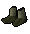
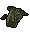
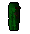

")
Crafting - Leather
Introduction | Items needed | Tanning your hides | Soft Leather | Hard and Studded Leather
Snakeskin Items | Dragon leather | Spiked Vambraces
Snakeskin Items | Dragon leather | Spiked Vambraces
Introduction
Leather is a supple and lightweight form of armour that gives the flexibility that rangers desire while fighting.
Leather comes in four forms:
- Soft leather (made from cowhide)
- Hard leather (made from cowhide)
- Snakeskin (made from snake hide) Members Only
- Dragon leather (made from dragonhide) Members Only
Items you will need to craft/sew leather items
| Tool | Location Found | Use |
![[image]](../../img/main/kbase/items/hide/cowhide.gif) Cowhide Cowhide |
Kill a cow | Can be given to a tanner to turn into leather. |
![[image]](../../img/main/kbase/items/hide/snakehide.gif) Snake hide Snake hide |
Bush snakes (Tai Bwo Wannai Clean-Up) Giant snakes (Temple Trekking) |
Can be given to a tanner to turn into snakeskin. |
![[image]](../../img/main/kbase/items/hide/greendhide.gif) Dragonhide Dragonhide |
Kill a green, blue, red or black dragon depending on which hide you want. | Can be given to a tanner to turn into dragon leather. |
![[image]](../../img/main/kbase/items/misc/needle.gif) Needle Needle |
Crafting stores sell them. | Use a needle with some prepared leather to make armour (requires thread to work). |
![[image]](../../img/main/kbase/items/misc/thread.gif) Thread Thread |
Crafting stores sell them. | You need thread in your inventory with a needle to craft leather armour. |
Tanning your hides
Once you have your hides, you will need to take them to a tanner, they can be found in Varrock, Al Kharid, the Crafting Guild or Canifis. Look out for this symbol
Hide Name |
Leather Type |
Tanning Cost - Guild/Al Kharid |
Tanning Cost - Sbott (Canifis) |
| Cowhide |
Leather (soft) | 1 gp | 2 gp |
| Cowhide |
Leather (hard) | 3 gp | 5 gp |
| Snake hide |
Snakeskin | 15 gp (20 for giant snake hide) |
25 gp |
| Green dragonhide |
Green dragon leather | 20 gp | 45 gp |
![[image]](../../img/main/kbase/items/hide/bluedhide.gif) Blue dragonhide Blue dragonhide |
Blue dragon leather | 20 gp | 45 gp |
![[image]](../../img/main/kbase/items/hide/redhide.gif) Red dragonhide Red dragonhide |
Red dragon leather | 20 gp | 45 gp |
![[image]](../../img/main/kbase/items/hide/blackdhide.gif) Black dragonhide Black dragonhide |
Black dragon leather | 20 gp | 45 gp |
Once you have had your hides turned into leather you are almost ready to begin, all you need now is a needle and some thread. You will only need one needle to craft with and each roll of thread will last four uses.
Soft Leather
The most basic form of leather-working is the art of Crafting soft leather into armour, this is a reasonably easy way of mastering the Crafting skill, as there are plenty of cows around Lumbridge from which you can receive hide. The tanners in Al Kharid or Varrock are not far from Lumbridge, and they have crafting stores too. Gathering the required items and finding people to sell your goods to should provide little challenge, especially if you gather your resources on a quiet world and then move to a busier one to sell your wares.
| Item | Crafting Level Required | Tools Required | Experience Points Gained |
![[image]](../../img/main/kbase/items/clothing/leathergloves.gif) Leather gloves |
1 |
Soft leather Needle Thread |
13.8 |
| Leather boots | 7 |
Soft leather Needle Thread |
16.3 |
![[image]](../../img/main/kbase/armour/ranged/leather_cowl.gif) Leather Leathercowl |
9 |
Soft leather Needle Thread |
18.5 |
![[image]](../../img/main/kbase/armour/ranged/leather_vambraces.gif) Leather vambraces |
11 |
Soft leather Needle Thread |
22 |
![[image]](../../img/main/kbase/armour/ranged/leather_body.gif) Leather body |
14 |
Soft leather Needle Thread |
25 |
![[image]](../../img/main/kbase/armour/ranged/leather_chaps.gif) Leather chaps |
18 |
Soft leather Needle Thread |
27 |
![[image]](../../img/main/kbase/armour/ranged/leather_coif.gif) Coif |
38 |
Soft leather Needle Thread |
37 |
Feather Headdresses
Summoning makes use of feather headdresses to allow summoners to store scrolls for use in combat (or simply to save some inventory space). These can be crafted using coloured feathers from bird snaring and a coif.
| Item | Crafting Level Required | Tools Required | Experience Points Gained |
![[image]](../../img/main/kbase/skills/summoning/items/feather_headdress.gif) Feather headdress |
79 |
Coif 20 Hunter feathers |
50 |
For more information about what feather headdresses can do, please read Summoning - Items.
Hard and Studded Leather
When your Crafting level has advanced enough, you can take leather Crafting to the next level : Crafting hard leather. Not only are these items more sought after, but they provide improved protection than soft leather goods, meaning the profit you can gain from selling them is larger.
| Item | Crafting Level Required | Tools Required | Experience Points Gained |
![[image]](../../img/main/kbase/armour/ranged/hardleather_body.gif) Hard leather body |
28 |
Hard leather Needle Thread |
35 |
![[image]](../../img/main/kbase/armour/ranged/studded_leather_body.gif) Studded body |
41 |
Soft leather Needle Thread Studs* |
40 |
![[image]](../../img/main/kbase/armour/ranged/studded_leather_chaps.gif) Studded leather chaps |
44 |
Soft leather Needle Thread Studs* |
42 |
* For more information on how to make studs please visit the Smithing section of our manual.
Snakeskin Items
Snake skin can be aquired by taking part in the Tai Bwo Wannai Clean Up (requires completion of Jungle Potion) or it can be cut from dead giant snakes that you kill in Temple Trekking.
When you have your tanned snake hide it may be used to make the following items:
| Item Name | Crafting Level Required | Tools Required | Experience Points Gained |
|  Snakeskin boots |
45 |
6 snake leathers Needle Thread |
30 |
![[image]](../../img/main/kbase/armour/ranged/snakeskin_vambraces.gif) Snakeskin vambraces |
47 |
8 snake leathers Needle Thread |
35 |
![[image]](../../img/main/kbase/armour/ranged/snakeskin_bandana.gif) Snakeskin bandanna |
48 |
5 snake leathers Needle Thread |
45 |
![[image]](../../img/main/kbase/armour/ranged/snakeskin_chaps.gif) Snakeskin chaps |
51 |
12 snake leathers Needle Thread |
50 |
|  Snakeskin body |
53 |
15 snake leathers Needle Thread |
55 |
Dragon Leather
Once you have successfully gathered a number of your chosen dragonhides, you will need to get them tanned (for 20 gp a time) before they are ready to be made into armour. However, with that done you can begin crafting items as shown below:
Green Dragonhide Items
| Item Name | Crafting Level Required | Tools Required | Experience Points Gained |
![[image]](../../img/main/kbase/armour/ranged/green_dragon_vambraces.gif) Green dragonhide vambraces |
57 |
Green dragon leather Needle Thread |
62 |
|  Green dragonhide chaps |
60 |
2 green dragon leathers Needle Thread |
124 |
![[image]](../../img/main/kbase/armour/ranged/green_dragon_body.gif) Green dragonhide body |
63 |
3 green dragon leathers Needle Thread |
186 |
Blue Dragonhide Items
| Item Name | Crafting Level Required | Tools Required | Experience Points Gained |
![[image]](../../img/main/kbase/armour/ranged/blue_dragon_vambraces.gif) Blue dragonhide vambraces |
66 |
Blue dragon leather Needle Thread |
70 |
![[image]](../../img/main/kbase/armour/ranged/blue_dragon_chaps.gif) Blue dragonhide chaps |
68 |
2 blue dragon leathers Needle Thread |
140 |
![[image]](../../img/main/kbase/armour/ranged/blue_dragon_body.gif) Blue dragonhide body |
71 |
3 blue dragon leathers Needle Thread |
210 |
Red Dragonhide Items
| Item Name | Crafting Level Required | Tools Required | Experience Points Gained |
![[image]](../../img/main/kbase/armour/ranged/red_dragon_vambraces.gif) Red dragonhide vambraces |
73 |
Red dragon leather Needle Thread |
78 |
![[image]](../../img/main/kbase/armour/ranged/red_dragon_chaps.gif) Red dragonhide chaps |
75 |
2 red dragon leathers Needle Thread |
156 |
![[image]](../../img/main/kbase/armour/ranged/red_dragon_body.gif) Red dragonhide body |
77 |
3 red dragon leathers Needle Thread |
234 |
Black Dragonhide Items
| Item Name | Crafting Level Required | Tools Required | Experience Points Gained |
![[image]](../../img/main/kbase/armour/ranged/black_dragon_vambraces.gif) Black dragonhide vambraces |
79 |
Black dragon leather Needle Thread |
86 |
![[image]](../../img/main/kbase/armour/ranged/black_dragon_chaps.gif) Black dragonhide chaps |
82 |
2 black dragon leathers Needle Thread |
172 |
![[image]](../../img/main/kbase/armour/ranged/black_dragon_body.gif) Black dragonhide body |
84 |
3 black dragon leathers Needle Thread |
258 |
Spiked Vambraces
Those who enjoy Hunter as much as their Crafting will be able to attach spikes to their leather and dragon vambraces. With a Crafting skill of 32, you can 'use' the kebbit claws, caught from a deadfalled wild kebbit, onto any dragon or leather vambrace to add a +2 boost to your Strength stat.
Click here to view the Crafting FAQs

More articles in
Crafting
|
|
|
Further Help
If this article does not help you, you may find the following sections of the RuneScape site helpful:
|
|